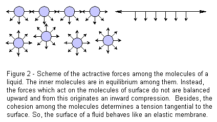

The experiment is on illustration of the cause surface tension of water, and the effects of detergents and soaps on this, can serve as an introduction to the phenomenon of surface tension, with a discussion of results leading into simple theory. Alternatively, it deals with what is happening when detergents and soaps are added, including the differences found with hard water. Further it stresses on the microscopic details and idea of surfactant in a applicative manner.

To study the change in the phenomanon of surface tension with addition of colloids to water.

A molecule of a liquid attracts the molecules which surround it and in its turn it is attracted by them (figure 1). For the molecules which are inside a liquid, the resultant of all these forces is neutral and all them are in equilibrium by reacting with each other. When these molecules are on the surface, they are attracted by the molecules below and by the lateral ones, but not toward the outside. The resultant is a force directed inside the liquid. In its turn, the cohesion among the molecules supplies a force tangential to the surface. So, a fluid surface behaves like an elastic membrane which wraps and compresses the below liquid. The surface tension expresses the force with which the surface molecules attract each other. A way to see the surface tension in action is to observe the efforts of a bug to climb out of the water. On the contrary, other insects, like the marsh treaders and the water striders, exploit the surface tension to skate on the water without sinking.
When an object falls onto the surface, it has to push the water molecules apart. If the effect of the weight of the object is insufficient to match the attractive forces between molecules in the surface layer, the object will not enter the surface. Careful observation of the floating needle will show that the water surface is bent down under the weight of the needle, the surface tension causing it to behave as if the needle was supported by a flexible skin.

Molecules of most detergents and soaps are long chain hydrocarbon molecules with an ionic group at one end, usually carrying a negative charge, thus making it an anion. This charge is balanced by the opposite charge of a soluble cation, for example Na+. The long hydrocarbon chains do not interact well with water molecules, and many of them are effectively ‘squeezed out’ to the interfaces between the water and the air or the glass sides of the beaker. The effect of these molecules on the water surface is to considerably weaken the forces between water molecules there, thus lowering the surface tension.
When the drop of detergent is added to the powdered surface, the initial effect is to draw the powder back to the edges very rapidly as the detergent molecules form their own surface layer with a lower surface tension than the water. As the detergent gradually mixes with the water, the powder begins to sink, and a needle will now pass through the surface with ease under its own weight. However, if lycopodium powder is used, which is less dense than water, it remains at the edges. Other powders may clump into nodules if they are not wetted by the detergent solution.
In hard water there is a significant concentration of calcium, Ca2+, and/or magnesium, Mg2+, cations. These cations form an insoluble compound with soap anions, so instead of forming a surface layer, they are precipitated out, leaving the surface tension little changed.
However, the calcium and magnesium salts of many detergent molecules are soluble, so detergents still lower the surface tension of hard water.

To start the experiment do the following:
- Half-fill the beaker with purified water. [Click on the beaker to start]
- Sprinkle the water surface carefully with a fine layer of powder.[click on the talcum powder from the apparatus table]
- Add one drop only of detergent in the middle of the water surface. Observe what happens. Does the talcum powder stay on the surface, or does it sink? [Click on the the detergent available on the apparatus table]
- Again using a clean beaker with purified water, try to float a fine sewing needle on the surface by carefully lowering it into the beaker, avoiding breaking the surface with your fingers, and dropping it from as close above the surface as possible. Once you have a needle floating, add a small drop of detergent to the water, but away from the needle. What happens? [Click to select the needle and add it from the apparatus shelf and after that click on the detergent available on the shelf to add the same]
- Repeat 1, 2 and 3, only this time use hard water instead of purified water. Are the results different from those obtained with purified water? If so, in what ways? [Again select the beaker by clicking on it to perform the above procedure]
- For the microscopic view of the total procedural effect refer to the microscopic “anlaysis” tab at the end of the experiment, click on it.


Pre-Experiment
- What is the name of the force that supplies tangential force to maolecules on the surface?
- In hard water there is significant concentration of which two types of ions?
Post-Experiment
- What change is observed when same experiment is performed using once purified water and then hard water?
- What would have happened if we drop the detergent on the needle and not carefully on its side?
- What happens to the powder molecules when you add detergent drop to the solution?

 Experiments
Experiments Feedback
Feedback